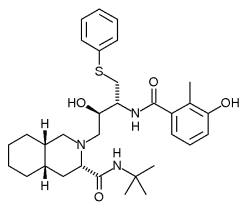

Why is docking important?
The purpose of this practical is to give a flavour of how one could dock small flexible molecules to a protein structure. Such in silico methods are extremely useful for both finding potential binding sites and also to discover and/or engineer new molecules that could bind to a known site. This is a multi-billion dollar industry. Virtual screening and blind docking are often employed in an attempt to discover new medicines.
A case study: HIV-1 protease
The HIV-1 protease [1] is an enzyme that is vital for the replication of HIV. It cleaves newly formed polypeptide chains at appropriate locations so that they form functional proteins. Hence, drugs that target this protein could be vital for suppressing viral replication. A handful of drugs - called HIV-1 protease inhibitors (saquinavir, ritonavir, indinavir, nelfinavir, etc.) [2] - are currently commercially available that inhibit the function of this protein, by binding in catalytic site that binds the polypeptide.
 HIV-1 Protease |
What does this practical cover?
We will first look at the protein structure (PDB ID: 1HSG) [3]. We will then try to dock a couple of drug molecules into the binding site to see how well docking can reproduce the binding pose. We will also generate the electrostatic surface of the protein to study a bit more how the drug interacts with the protein.
Anything that starts with the symbol % should be run in a command line terminal/command prompt and PyMOL> should be run in a PyMOL command line. If this is your first acquaintance with Linux, it is strongly recommended to have a look at Appendix II for some useful Linux commands. Very little knowledge is assumed and this really is an undergraduate level introduction to using these tools and docking. If you are trying to do this on your own locally, then the hardest step is likely to be installing all the relevant software parts!
% cd ~/Desktop % vina --version % pymol -c % adt -h
- Now lets get all the data files you need for this practical - they can be found here:
http://sbcb.bioch.ox.ac.uk/phil/teaching/docking-2020.tar.gz. Download and save it to your Desktop. (Note: To do this, you might have to right click the link, select "Save Link As..." and make sure the folder in "Save in folder" is Desktop. Click Save). On your Desktop, right click the downloaded file docking-2020.tar.gz and select Extract here. This should create a directory called dock-prac on your Desktop.
Alternatively, If it has been automatically saved in the Downloads directory, use the terminal to move the compressed file to your current directory and extract its contents:% mv ~/Downloads/docking-2020.tar.gz . % tar -xvf docking-2020.tar.gz
(Note this will work in windows 10 now directly - older windows will probably require winzip or equivalent to unpack).
In this practical, we will use the structure of the HIV-1 protease - PDB ID: 1hsg. This is a 2Å resolution X-ray crystal structure of HIV-1 protease with a bound drug molecule indinavir. We will use pymol to view the protein, the binding site and the drug molecule. An introduction to PyMOL can be found here.
 Indinavir (Source: http://en.wikipedia.org/wiki/Indinavir) |
- In a terminal (open a new terminal if you don't have one open already), change to the docking practical directory and activate the conda environment you created in section 2.
% cd ~/Desktop/dock-prac % mkdir 1HSG % cd 1HSG
- Download the protease structure in PDB format (PDB ID: 1hsg) from the Protein Data Bank (http://www.pdb.org). Search using the PDB ID 1hsg. On the results page, click Download Files and select PDB Format. Save it in ~/Desktop/dock-prac/1hsg. If the internet is down you can get a copy from ~/Desktop/dock-prac/backup/data/1hsg.pdb. (Note: Once again you might have to right click, select Save Link As... and browse to /home/biocomp/Desktop/dock-prac/1hsg. Make sure you set the filename Name to 1hsg.pdb. Click Save)
- Load the structure into pymol. You should see the protein structure displayed as lines and water molecules as little red crosses.
% pymol 1hsg.pdb &
- Let's start by hiding everything. Click the H (for hide) next to all in PyMOL's Object Control Panel (the panel on the right with buttons Actions, Hide, Show, Label and Colour) and select everything. The screen should be clear now.
- Now show (S) the protein (1hsg) using the cartoon representation and colour (C) by chain to show that it is a homodimer.
- Let's select the ligand indinavir and show it as sticks. In the PyMOL command line (with a "PyMOL >_") type
PyMOL> select indinavir, resn MK1
resn MK1 selects the residue MK1, which is indinavir. You should now have an object in the object control panel called (indinavir). Display it as sticks. Click anywhere in the display screen to unselect the selected atoms. - Now, rotate (left mouse button), zoom (right mouse button) and move (middle mouse button) the molecule to get an idea where the binding site is. You will need to know where it is for the next exercise .
- Water molecules have the residue name HOH. Select and display all water molecules as red spheres. If you think the spheres are too big, type
PyMOL> set sphere_mode, 4 PyMOL> set sphere_scale, 0.4
Q: Water molecules normally have 3 atoms. Why do we see just one atom per water molecule?
Q: There is a conserved water molecule in the binding site. Can you identify this water molecule? What is its residue ID number?
Q: Looking at the structure, what might have to happen for the ligand to gain access to the binding site?
- If you would like to save a nice image of the protein, ray trace it and save it as an image file.
PyMOL> bg_color white PyMOL> set depth_cue,0 PyMOL> ray PyMOL> png protein.png
- Close PyMOL by typing quit in PyMOL command window or clicking the x in the PyMOL Tcl/Tk GUI window.
- Using eog, you can visualise the image you just generated.
% eog protein.png
Docking algorithms require each atom to have a charge and an atom type that describes its properties. However, the PDB structure lacks these. So, we have to prep the protein and ligand files to include these values along with the atomic coordinates. Furthermore, for flexible ligand docking, we should also define ligand bonds that are rotatable. All this will be done in a tool called AutoDock Tools (autodocktools).
Prepare the protein using AutoDockTools
- The PDB file (1hsg.pdb) contains protein, ligand and water oxygen atoms. First we have to extract just the protein atoms, which are lines that start with the keyword ATOM. Each protein chain is terminated with a line that starts with TER. (If you would like to confirm this, open 1hsg.pdb in a text editor and scroll through the text.)
% egrep "^(ATOM|TER)" 1hsg.pdb > 1hsg_protein.pdb [If you are on linux or mac] % findstr "^ATOM ^TER" 1hsg.pdb > 1hsg_protein.pdb [If you are on windows]
- Proteins obtained from the PDB don't have hydrogens (unless the resolution is sub Angstrom or the structure is obtained by neutron diffraction). So the first step is to add hydrogens, which we will do using AutoDockTools:
% adt &
- Load the protein using File > Read Molecule. Select 1hsg_protein.pdb. Click Open.
Note: In ADT, you can translate the molecule by clicking and holding down the right mouse button while moving the mouse, rotate by clicking and holding down the middle button and zoom in/out by using the scroll wheel of the mouse. - Bonds and atoms are shown in white. For better visualisation, colour the structure by atom type - Color > By Atom Type. Click All Geometries and then OK.
Q: Can you locate the binding site visually?
- Crystal structures normally lack hydrogen atoms. However, hydrogen atoms, or more specifically polar hydrogen atoms are required for appropriate treatment of electrostatics during docking. Add hydrogen atom to the structure using - Edit > Hydrogen > Add. Click OK. You should see a lot of white dashes where the hydrogens were added.
- Now we need to get ADT to assign charges and atom type to each atom in the protein. We do this with Grid > Macromolecule > Choose.... Choose 1hsg_protein in the popup window and click Select Molecule. ADT will merge non-polar hydrogens, assign charges and prompt you to save the macromolecule. Click Save. This will create a file called 1hsg_protein.pdbqt in the current folder. Open this in a text editor and look at the last two columns - these should be the charge and atom type for each atom.
Q: Look at the charges. Does it make sense?
- Whilst we are here, we can also demonstrate how AutoDockTools can be used to define grid box that determines the 3D search space were ligand docking will be attempted. Remember the binding site that you observed in one of the earlier steps. If we do not know the binding site, we will either define a box that encloses the whole protein or perhaps a specific region of the protein. In this case, to speed up the docking process, and because we know where it is, we will define a search space that encloses the known binding site.
- To define the box, use Grid > Grid Box.... This will draw a box with opposite faces coloured in red, green and blue. Fiddle with the dials and see how you can enclose regions of the protein. In this instance we will use a Spacing (angstrom) of 1Å (this is essentially a scaling factor). So set this dial to 1.000. So that we all get consistent results, let us set the (x, y, z) center as (16, 25, 4) and the number of points in (x, y, z)-dimension as (30, 30, 30). Make a note of these values. We will need it later. Close the Grid Options dialog by clicking File > Close w/out saving.
- That is all we need to do with the protein file. Delete it from the display using Edit > Delete > Delete Molecule and select 1hsg_protein. Click Delete Molecule and CONTINUE.
Prepare the ligand with AutoDockTools
- Like the protein, the ligand lacks hydrogen atoms. We need to add hydrogen atoms and also define rotatable bonds that will be used for flexible docking.
- First, extract the ligand atoms from the PDB. As mentioned in Exercise 1, the ligand residue name for indinavir in the PDB file is MK1 and the lines start with the keyword HETATM for heteroatoms. In a terminal type
% grep "^HETATM.*MK1" 1hsg.pdb > indinavir.pdb (on windows: findstr "^HETATM.*MK1" 1hsg.pdb > indinavir.pdb)
- Load the ligand structure into ADT using File > Read Molecule and select indinavir.pdb
- Again, colour by atom type. Color > By Atom Type. Click All Geometries and then OK.
- Now we have to add polar hydrogen atoms. Add all hydrogen atoms initially. Non polar hydrogens will be merged in the next step. Edit > Hydrogens > Add. Select All Hydrogens and click OK.
- Define this as the ligand in ADT so that ADT assigns partial charges and sets rotatable ligand bonds using Ligand > Input > Choose.... Select indinavir and click Select Molecule for AutoDock4. You should see a message that confirms that non-polar hydrogens have been merged, charges added and rotatable bond detected. Click OK. The ligand will now have only polar hydrogens.
- To check the rotatable bonds detected by ADT, go to Ligand > Torsion Tree > Choose Torsions.... You should see 14 rotatable bonds.
Q: What do the three colours - green, magenta and red - mean? Does it make sense?
- Click Done when you are done.
- Save the ligand file in PDBQT format. Do this using Ligand > Output > Save as PDBQT.... Click Save to save the file as indinavir.pdbqt.
- Quit ADT using File > Exit and then OK.
Prepare a docking configuration file
- Before we can perform the actual docking, we need to create an input file that defines the protein, ligand and the search parameters. We will create the input file in a text editor.
- If you have used Unix/Linux before, open your favourite text editor - vi, emacs, nano - or use a GUI based editor called gedit.
% gedit & (on windows, could use notepad)
- The input file should look something like:
receptor = 1hsg_protein.pdbqt ligand = indinavir.pdbqt num_modes = 50 out = all.pdbqt center_x = XX center_y = XX center_z = XX size_x = XX size_y = XX size_z = XX seed = 2009
This defines your protein (receptor), ligand, number of docking modes to generate (num_modes). All the docked modes will be collated in a file defined by out (all.pdbqt). You should replace the XX with the center of your 3D search space (center_x/y/z) and the size of the box (size_x/y/z) that you defined in the "Prepare the protein" section. - Save the file as config.txt in the folder containing the protein and ligand .pdbqt files.
- For this practical, we will use a program called Autodock Vina [4] for docking. Autodock Vina is a fast docking algorithm that requires minimal user intervention. We will run it from a terminal.
- Make sure you are in the folder containing 1hsg_protein.pdbqt, indinavir.pdbqt and config.txt
- Run vina to perform the docking. We will keep a log of all the program output in a file log.txt
% vina --config config.txt --log log.txt
This will take a few minutes depending on how fast your computer is. While you wait, if you are interested, read [1] for a review on HIV-1 protease structure, function and drug discovery. - Once the run is complete, you should have a two files all.pdbqt, which contains all the docked modes, and log.txt, which contains a table of calculated affinities based on AutoDock Vina's scoring function [4]. The best docked mode, according to AutoDock Vina, is the first entry in all.pdbqt.
- Lets visualise the docks and compare it to the crystal conformation of the ligand. Load the protein, the extracted ligand and the docks into pymol.
% pymol 1hsg_protein.pdb indinavir.pdb all.pdbqt &
- Begin by hiding everything. Now, display the protein in cartoon representation, indinavir in stick representation and the docked conformations as sticks as well.
- Cycle through the docks by clicking the playback control buttons on the lower right hand corner of the window.
Q: Qualitatively, how good are the docks?
Q: Is the crystal binding mode reproduced? If not or if there is a difference, what could be the reason? Is it the best conformation according to AutoDock Vina?
- Close PyMOL.
- In the previous exercise, AutoDock Vina should have found a near native docked conformation for the drug indinavir. In this exercise, we will try to dock another drug nelfinavir into the protein structure 1HSG broadly along the lines of how one would dock a small molecule into a target structure. This approach could be refined and extended to the "virtual screening" approach.

Nelfinavir (Source: http://en.wikipedia.org/wiki/Nelfinavir)
- Start by creating a new directory for this docking run. Your current directory should now be: ~/Desktop/dock-prac/1HSG.
% cd ~/Desktop/dock-prac % mkdir 1HSG_nelfinavir % cd 1HSG_nelfinavir
- Since we will be using the same protein structure to dock nelfinavir, copy all the protein related files that you created in "Prepare the protein" section.
% cp ~/Desktop/dock-prac/1HSG/1hsg* .
- We need a structure of nelfinavir. There should be a copy in ~/Desktop/dock-prac/backup/nelfinavir.pdb. Copy it to the current directory:
% cp ~/Desktop/dock-prac/backup/data/nelfinavir.pdb .
- Prep the ligand file and generate the PDBQT file - nelfinavir.pdbqt - using the steps use in the "Prepare the ligand" section.
- Since the binding site is the same, copy the docking config file - config.txt - from the previous exercise to the current directory.
% cp ~/Desktop/dock-prac/1HSG/config.txt .
- You have to change one entry in the configuration file. Make the change.
- Now you should have everything required by AutoDock Vina to generate a series of docking modes.
% vina --config config.txt --log log.txt
This will take a few minutes to run... - Load the protein and the docked structures and show the protein as cartoon and the docks as sticks.
% pymol 1hsg_protein.pdb all.pdbqt &
Q: Qualitatively, how good are the docks?
Q: Is it docked in the binding site?
Q: Is the best docked conformation of nelfinavir similar to indinavir?
Q: Based on the literature, what is common among this class of HIV-1 protease inhibitors?
Q: How would you check computationally whether the conformation makes sense?
- Fortunately, in this instance, there are crystal structures of nelfinavir bound to HIV-1 protease inhibitor that you can use to validate your docking results.
- Use the Protein Data Bank and download the PDB file for 1OHR. Save it in the current directory - ~/Desktop/dock-prac/1hsg_nelfinavir. (If the internet is down, there should be a copy in ~/Desktop/dock-prac/backup/data/1OHR.pdb).
- Load this structure into PyMOL using File > Open.... Select 1ohr.pdb and click OK.
- Hide all representations of 1ohr using H and then everything. Now, display 1ohr as cartoon and colour by chain.
- You may have observed that the two HIV-1 protease structures are in different orientations in space. To make sense of the docking results, you have to align the two structures. You can use the PyMOL align command to do this. In the PyMOL command line, type:
PyMOL> align 1ohr, 1hsg_protein
1ohr should now be overlaid on 1hsg_protein
Note: A copy of the aligned structure can be found in ~/Desktop/dock-prac/backup/data/1OHR_aligned.pdb if the align command does not work.
Q: What is the RMSD of the alignment? Is it qualitatively and quantitatively good?
- You may have observed that moving the structure around the window is a bit difficult since the origin of the view has been altered when you loaded 1ohr.pdb. To reset it, try:
PyMOL> reset
- nelfinavir has the residue name 1UN in 1ohr. Select and display it as sticks.
PyMOL> select nelfinavir, 1ohr and resn 1UN
Colour it by element and pick any colour combination.
Q: Is the "best mode" generated by AutoDock Vina similar to the crystal conformation of nelfinavir? If not, why not?
Q: How about the "second best mode"? Why do you think this is the case? (Hint: Look at the affinities reported in the log file)
Q: In this instance we assumed that chain A of 1HSG corresponds to chain A of 1OHR. Is this true always?
- Let us align chain A of 1ohr to chain B of 1hsg.
PyMOL> align 1ohr and chain A, 1hsg_protein and chain B
Q: Compare the first two AutoDock Vina docks with the crystal conformation. What does this tell you? What could be a reason for this observation?
- Close PyMOL when done.
- First, create a new directory for this exercise and copy the protein structure - 1hsg_protein.pdb into this folder.
% mkdir ~/Desktop/dock-prac/1HSG_APBS % cd ~/Desktop/dock-prac/1HSG_APBS % cp ~/Desktop/dock-prac/1HSG/1hsg_protein.pdb . (on windows: copy ..\1hsg_protein.pdb .) % cp ~/Desktop/dock-prac/1HSG/indinavir.pdb . (on windows: copy ..\indinavir.pdb .)
- As we found out earlier, PDB structures do not contain partial charges for the atoms in the structure. Partil charges are crucial for electrostatic calculations. In order to use the APBS tool, we first need to generate a PQR file that contains the atom partial charges and can be read by APBS.
- Go to this link poisson-boltzmann web server. Click on the Upload a PBD file tab and then the Select File tab to choose the 1hsg_protein.pdb file from your directory. Select the option Use PROPKA to assign protonation states at provided pH and select the CHARMM Force Field. Finally, select the add/keep chain IDs in the PQR file and click the green Start Job button at the bottom right corner of the screen to run the job. The job should only need a few seconds to finish.
- Once the job has completed, click on the blue Use results with APBS button, at the top right corner of the screen. Leave the default PABS configuration as it is and only click the green Start Job button. This job should also need a few seconds only. When the job is completed, you will see a list of several APBS Output Files. The one you will need for thevisualisation of the electrostatic surface of the protein is the one with the .dx suffix. Click Download and save the file to ~/Desktop/dock-prac/1HSG_APBS or, if it is automatically saved in the Downloads directory, then go to the terminal and move it to your working directory:
% mv ~/Downloads/*.dx .
- To inspect the electrostatic surface of the protein that you just generated, you will use another very powerful tool for molecular visualisation, the VMD (Visual Molecular Dynamics) software. To load the protein and the ligands on VMD, go to the terminal and, on the command line, type:
% vmd -m 1hsg_protein.pdb indinavir.pdb
- On the tab titled VMD Main, right-click the 1hsg_protein.pdb file and select Load Data into Molecule -> Browse..., choose the .dx file that you obtained previously and hit Load
- The protein, its electrostatic surface and the drug are now loaded, but you need to represent them in a way that will allow you to make useful observations. Go to Graphics -> Graphical Representations and in the Selected Molecule drop-down list, select the protein. From the Coloring Method drop-down list select the Chain and the NewCartoon as the Drawing Method. Then, create one more representation by clicking on the Create Rep button. This time, choose Volume as the Coloring Method, QuickSurf as the Drawing Method and EdgyGlass as the Material. Reduce the Radius Scale to 0.7 and click on the Trajectory tab to change the Color Scale Data Range to extend from -5 to 5 and click Set. To change the representation of the drug, go to the Selected Molecule drop-down list again and select the indinavir.pdb file. In the Draw style tab, change the Drawing Method from Lines to Licorice.
- Now, using the keyboard and the mouse on the VMD Display, you can type r and click to rotate, t to translate and s to zoom in and out. To show or hide a representation, you can double-click on it on the Graphical Representations tab. Spend some time to explore the electrostatic surface of the binding pocket around the ligand.
- Create one more representation. In the Selected Atoms bar, type charged and hit Enter. Change the Coloring Method to ResType and the Drawing Method to Licorice. This action will only show the charged amino acids coloured red if negatively charged and blue if positively charged.
Q: Show/Hide the electrostatic surface and compare with the charged amino acids. Does it match up?
Q: Does anything on the protein surface (in the binding site) stand out?
Q: Why is the base of the binding site largely negative? How is it related to catalysis in this case?
Q: Does the protein surface charge (or lack thereof) correspond to complementary regions in the ligand?
- Brik A, Wong CH. "HIV-1 protease: mechanism and drug discovery". Org. Biomol. Chem. (2003) 1:5–14.
- Wensing AM, van Maarseveen NM, Nijhuis M. "Fifteen years of HIV Protease Inhibitors: raising the barrier to resistance." Antiviral Res. (2009) Online in advance of print.
- Chen Z, Li Y, Chen E, Hall DL, Darke PL, Culberson C, Shafer JA, Kuo LC. "Crystal structure at 1.9-A resolution of human immunodeficiency virus (HIV) II protease complexed with L-735,524, an orally bioavailable inhibitor of the HIV proteases." J. Biol. Chem. (1994) 269:26344-26348.
- Trott O, Olson AJ. "AutoDock Vina: improving the speed and accuracy of docking with a new scoring function, efficient optimization and multithreading", J. Comput. Chem. (2009)
- Baker NA, Sept D, Joseph S, Holst MJ, McCammon JA. "Electrostatics of nanosystems: application to microtubules and the ribosome." Proc. Natl. Acad. Sci. (2001) 98:10037-10041.
| PyMOL | http://www.pymolwiki.org/index.php/Main_Page (might need to install with conda install -c samoturk pymol) |
| VMD | https://www.ks.uiuc.edu/Research/vmd/ |
| AutoDock Tools | http://autodock.scripps.edu |
| AutoDock Vina | http://vina.scripps.edu |
| APBS | https://server.poissonboltzmann.org/ |
| ls -lrt | provides a "long" list of all files in the current directory in reverse order of time. |
| cd dir | change directory to the directory 'dir' |
| cd .. | move one level up |
| pwd | print the current working directory on the screen |
| rm file | delete (remove) 'file' |
| mv file newfile | rename file to newfile |
| mv file "new file path" | move file to new location |
| mv path/to/file . | move file from path to current directory |
| mkdir directoryname | create new directory |
| cat file | print the contents of file to the screen |
| more file | print the contents of file to the screen but with more navigation possible. |
Most of software necessary can be very simply installed under the conda framework. Conda is available on windows, linux and mac.
- This is the first step if you have not already installed conda (or miniconda) on your laptop - Rather than repeating the instructions here, simply head over to https://docs.conda.io/projects/conda/en/latest/user-guide/install/index.html and pick
up the relevant instructions for your operating system.
- Next, install all necessary packages with conda and activate the new environment using
% conda env create -f oxdocking-env.yml % conda activate OxDocking
- If you are on a mac or linux then you can install vina and pymol via conda like this as well:
% conda activate OxDocking % conda install -c bioconda autodock-vina % conda install -c schrodinger pymol
If you are using windows, you will have to install vina, pymol and autodock tools separately:Full install instructions for vina are here - (including how to build from the source) are here- http://vina.scripps.edu/manual.html)
- For all operating systems AutoDockTools has to be downloaded and installed separately. You can obtain and install it from here - its part of the mgltools package: http://mgltools.scripps.edu/downloads
- Windows users you will have to add the locations of the executables for vina, and adt.bat to you PATH - google how to add things to your path if you don't know how to do this - in windows 10 there is a gui that allows you to browse and select paths.